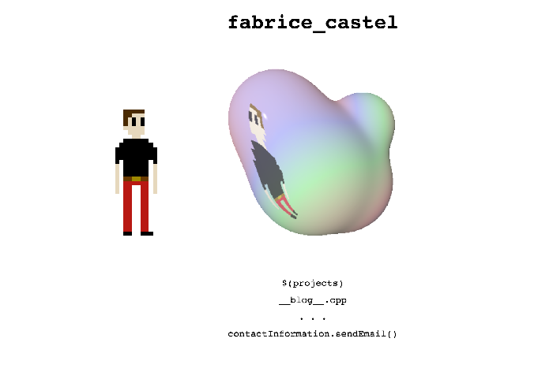
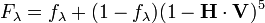
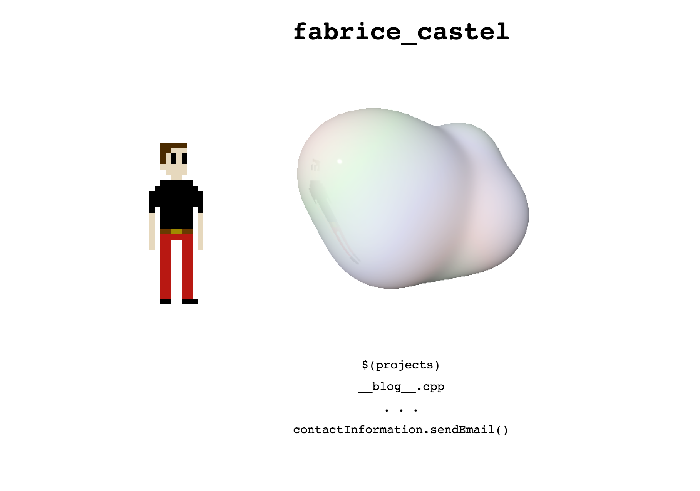

Alright, round 2. Since the last post I've tweaked the reflective plane's position and scaling to make the reflection match the character sprite standing off to the side. I've also gotten rid of the white background behind the character's reflection and added the following texture function to determine the diffuse colour across the scene's surfaces:
vec3 sTexture(vec3 p){
float d = length(p + vec3(13.0*sin(0.01*t), -14.0*cos(0.009*t), sin(0.006*t)*8.0));
const float dRange = 28.0; // repeat pattern every X units
float range_min = 0.92 + (sin(0.02*t) -1.0)*0.1;
const float range_max = 0.92;
float range_span = range_max - range_min;
const float n3 = 1.0/3.0;
float x = mod(d, dRange) / dRange;
vec3 rainbow = vec3(0.0, 0.0, 0.0);
for(int i = 0; i < 3; i++){
rainbow[i] = mix(range_span, 0.0, min(x*3.0, (1.0-x)*3.0, 1.0));
x = mod(x + n3, 1.0);
}
return rainbow+vec3(range_min);
}The idea is to create a rainbow-ish pattern starting from the centre of the world (0,0,0) that goes from red to orange to green to turquoise (...) and back to red as it expands uniformly outwards from the origin, repeating the pattern every 28 units. This turned out to look stale-ish, so in order to make it a livelier I made the centre of this spherical rainbow move around (that's what the amalgamation of sin and cos functions on the second line do). I kept the effect fairly mute to emulate a sort of subtle soap bubble, but to give you a better idea of what it does I've pushed range_min down to 0.5 for the following screenshot to really amp up the colours.
Now that you're all caught up let's get 'er done with Fresnel Equations! I've never done this, so bear with me if I make any mistakes. I'm unfortunately rusty/a bit of a n00b in optic physics, so bear with me here... As I understand it, we need to use the angle of reflectance to compute the reflected/absorbed ratio of incoming light. I then plan to interpolate between the reflected colour and the base colour of the surface with said ratio. This will of course only concern parts of the surface whose reflection hits the invisible texture plane since any other surface fragment reflects to the pure white environment.
We're going to need two other bits of information; n1, the refractive index of air and n2, the blob's refractive index. Let's pretend the blob is made of Onyx Marble.
n1 = 1.000
n2 = 1.486While trying to figure out this Fresnel business I came across Schlick's approximation. It's a method of approximating the Fresnel factor contribution (ie. what we're looking for) commonly used in 3D graphics. The specular reflection coefficient F can be calculated like this:
Just kidding - as much as I'd like to say I was able to do this, I got lost in physics and failed to get a working implementation going. Something something fail fast! Given this is a simple scene for my landing page, I decided I would instead try to "wing it" in the name of saving time and get my own approximation implemented. So in a nutshell, you want the reflection to be more prominent on the surface when you're looking at a grazing angle (ie. when the dot product between the vector pointing from the surface to the camera and the halfway vector between it and the reflection vector is low). If this doesn't make sense, try and imagine (or google) how reflections behave on a sphere made out of marble. Here's the code I wound up with to calculate the weight attributed to the reflection for the surface diffuse colour:
vec3 V = -ray;
vec3 H = (V + refRay) / (length(V + refRay));
float refWeight = max(0.0, 1.0 - abs(pow(dot(H, V) + 0.14, 1.0)));I might come back to this later to try and redo it properly, but for now I think there are more important things to implement (I'm looking at you, anti-aliasing and animations!) It looks a little something like this:
